| pitch_name | release_speed | ax | az | release_spin_rate | spin_axis | arm_angle |
|---|---|---|---|---|---|---|
| 4-Seam Fastball | 94.50 | -7.5124615 | -14.19235 | 2324.0 | 208.0 | 40.30 |
| Sinker | 94.00 | -16.0153319 | -23.41607 | 2192.0 | 217.0 | 33.70 |
| Pitch Out | 91.45 | -8.8737948 | -17.25759 | 2271.5 | 216.0 | 37.60 |
| Cutter | 89.70 | 0.7322950 | -23.85651 | 2414.0 | 184.0 | 39.10 |
| Slider | 86.40 | 1.5480337 | -30.02703 | 2435.0 | 145.0 | 39.90 |
| Changeup | 86.30 | -11.9283569 | -27.74882 | 1793.0 | 231.0 | 36.10 |
| Split-Finger | 86.30 | -10.8711843 | -28.96604 | 1378.0 | 236.0 | 39.00 |
| Screwball | 85.60 | -11.9158361 | -27.76816 | 1091.0 | 275.0 | 26.60 |
| Knuckle Curve | 83.40 | 3.3127451 | -39.99981 | 2496.0 | 42.0 | 42.30 |
| Sweeper | 82.70 | 9.0155974 | -31.28524 | 2598.0 | 70.0 | 31.60 |
| Forkball | 82.50 | -9.1322123 | -30.95555 | 1197.5 | 250.5 | 44.50 |
| Slurve | 81.90 | 6.9760142 | -36.05468 | 2540.5 | 56.0 | 35.60 |
| Curveball | 80.00 | 4.3609651 | -40.07122 | 2583.0 | 52.0 | 44.00 |
| Knuckleball | 77.65 | -1.0881771 | -32.04051 | 282.0 | 49.0 | 34.30 |
| Slow Curve | 72.00 | 2.8505047 | -35.82704 | 2514.0 | 190.0 | 34.25 |
| Other | 67.75 | -5.2617059 | -24.09361 | 1718.0 | 221.0 | 32.90 |
| Eephus | 50.50 | -0.7355639 | -28.06706 | 1253.0 | 205.0 | 50.70 |
Pitch Classification With Tidymodels
WORK IN PROGRESS
Introduction
My favourite thing to do while watching a baseball game (other than stuffing my face) is guessing the type of pitch after it’s been thrown. It may sound weird, but I can’t be the only one, since Baseball Savant has their own dedicated game called “Guess the Pitch Type” (My best score is 18 out of 20). I’ve always found it interesting how a broadcast can instantly display the type of pitch and wondered what information and modeling algorithms they’re using to make this prediction. In this publication I’m going to investigate just that.
Exploratory Analysis
Overview
Here is a quick look at the quantitative variables of interest. The following table displays the median values of the variables of interest for each pitch type listed in the 2025 statcast data.
Below is a brief introduction to these variables:
pitch_name : The name of the pitch derived from the Statcast Data.
release_speed : Pitch velocity out-of-hand.
ax : The acceleration of the pitch, in feet per second per second, in x-dimension, determined at y = 50 feet.
az : The acceleration of the pitch, in feet per second per second, in z-dimension, determined at y = 50 feet.
release_spin_rate : Spin rate of pitch tracked by Statcast.
spin_axis : The Spin Axis in the 2D X-Z plane in degrees from 0 to 360, such that 180 represents a pure backspin fastball and 0 degrees represents a pure topspin (12-6) curveball.
arm_angle : …
Here is a pairs plot for the 2025 xFIP leader Garrett Crochet. Several variables allow us to easily separate Crochet’s pitches, especially release speed and ax (see the plot in row 1, column 2).
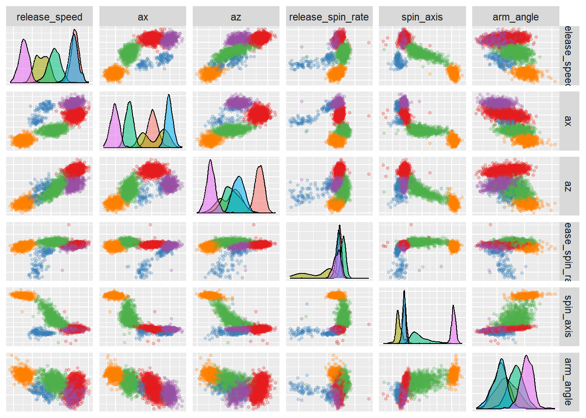
release_speed
Release speed (or velocity) does a great job of separating between fastballs, breaking balls, and off-speed pitches. In the plot below there is a clear drop off in velocity between the fastballs and off-speed/breaking pitches. Other variables are required to distinguish between different types of fastballs, as well as between the off-speed and breaking pitches.
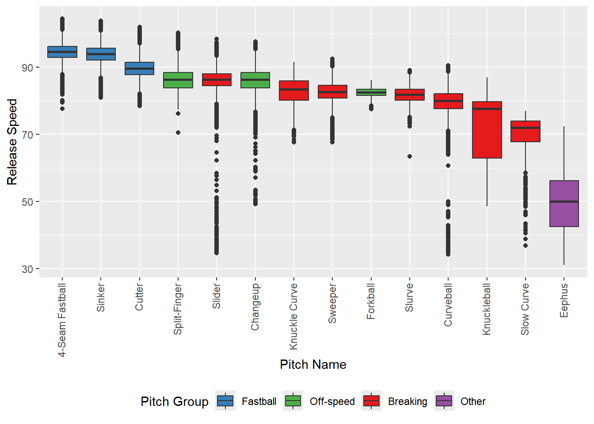
ax & az
Acceleration speeds do a great job of separating pitches with similar release speeds. The following plot is of the horizontal and vertical acceleration speeds for Chris Sale’s 2025 pitches, notice how the slider and changeup are easily distinguished, as well as the 4-seam fastball and sinker.
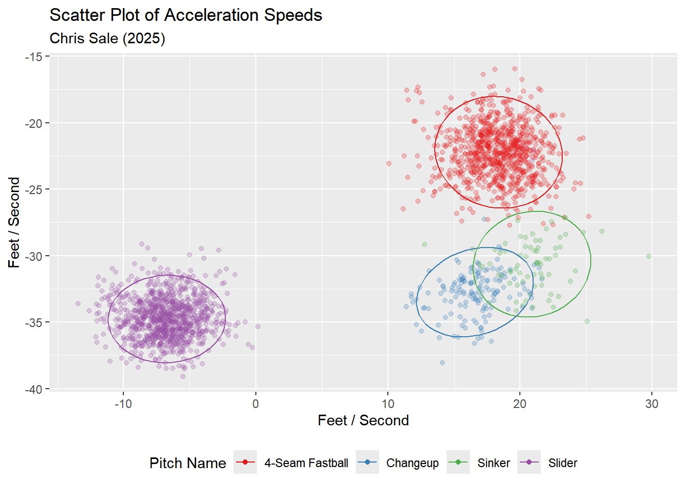
release_spin_rate
Release spin rate also does a great job of separating between fastballs, breaking balls, and off-speed pitches. In the plot below there is a large drop between the off-speed pitches and other pitch groups.
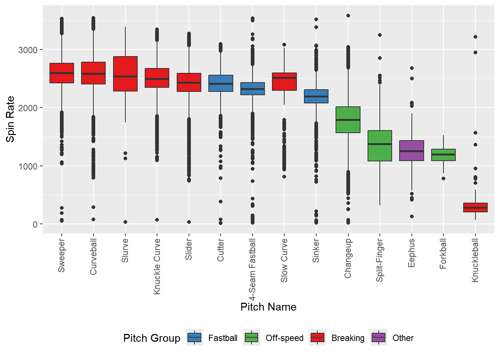
The spin rate of a pitch is generally positively correlated with it’s release speed (the exception being the knuckle curve), but each pitch type has a different slope. Using the 4-seam fastball as our baseline, every pitch has a significantly different slope, and every pitch except the sweeper has a significantly different intercept. The release speed and pitch type explain approximately 62% of the variance in spin rate.
| term | estimate | std.error | statistic | p.value |
|---|---|---|---|---|
| (Intercept) | 438.478131 | 17.2731258 | 25.384990 | 0.0000000 |
| release_speed | 19.936841 | 0.1826759 | 109.137760 | 0.0000000 |
| pitch_nameSlider | 1053.344850 | 25.4794351 | 41.340981 | 0.0000000 |
| pitch_nameSplit-Finger | -2914.713480 | 38.8512211 | -75.022442 | 0.0000000 |
| pitch_nameSinker | 155.347723 | 28.2210777 | 5.504670 | 0.0000000 |
| pitch_nameCurveball | 846.826340 | 27.5564705 | 30.730581 | 0.0000000 |
| pitch_nameSweeper | -59.639050 | 32.5591037 | -1.831717 | 0.0669941 |
| pitch_nameCutter | 706.240489 | 33.3396539 | 21.183198 | 0.0000000 |
| pitch_nameKnuckle Curve | 3050.732348 | 47.3264460 | 64.461471 | 0.0000000 |
| pitch_nameChangeup | 712.800314 | 25.7407292 | 27.691535 | 0.0000000 |
| release_speed:pitch_nameSlider | -8.991592 | 0.2838587 | -31.676294 | 0.0000000 |
| release_speed:pitch_nameSplit-Finger | 24.208414 | 0.4416112 | 54.818391 | 0.0000000 |
| release_speed:pitch_nameSinker | -2.922556 | 0.2998280 | -9.747443 | 0.0000000 |
| release_speed:pitch_nameCurveball | -3.501003 | 0.3251848 | -10.766197 | 0.0000000 |
| release_speed:pitch_nameSweeper | 6.943421 | 0.3809001 | 18.228984 | 0.0000000 |
| release_speed:pitch_nameCutter | -5.746950 | 0.3663366 | -15.687620 | 0.0000000 |
| release_speed:pitch_nameKnuckle Curve | -31.894105 | 0.5610943 | -56.842680 | 0.0000000 |
| release_speed:pitch_nameChangeup | -12.538147 | 0.2875658 | -43.600973 | 0.0000000 |
| r.squared | adj.r.squared | sigma | statistic | p.value | df | logLik | AIC | BIC | deviance | df.residual | nobs |
|---|---|---|---|---|---|---|---|---|---|---|---|
| 0.618679 | 0.61867 | 222.5587 | 68299.96 | 0 | 17 | -4883734 | 9767506 | 9767724 | 35447348475 | 715640 | 715658 |
The next plot shows the correlation between release speed and spin rate. Most pitches display a positive correlation, where as others (like the knuckle curve) have a negative correlations, and some (like the slider) have almost no correlation.
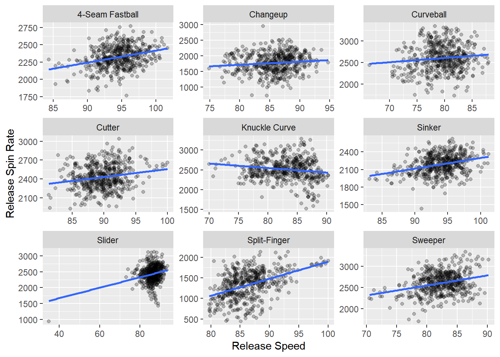
spin_axis
Since the spin axis is a radial feature, It will need to be converted into two separate variables using sine and cosine.
Spin axis does a great job of separating pitches with similar release speeds. In the plot below, the slider and changeup are easily distinguished, as well as the 4-seam fastball and sinker.
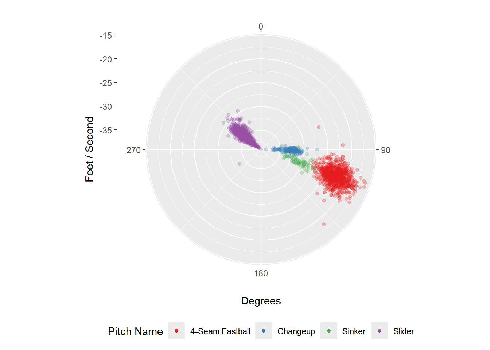
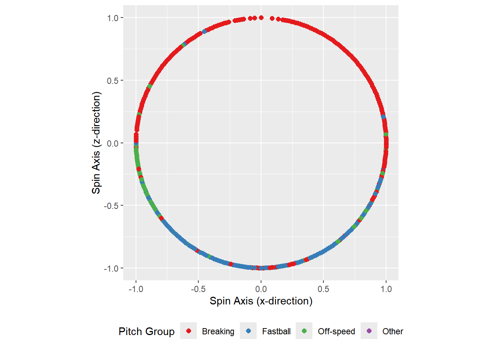
Pitchers
I have elected to run my models on the Statcast data from three pitchers: 2025 NL Cy Young runner-up Cristopher Sánchez, 2025 AL Cy Young winner Tarik Skubal, and 2025 NL Cy Young winner Paul Skenes. I chose these three due to the varying number of unique pitches they throw. Sánchez throws just three, where as Skubal and Skenes throw five and Seven, respectively.
Cristopher Sánchez

Cristopher Sánchez is a Dominican professional MLB pitcher known for his smooth left-handed delivery, heavy sinker, and devastating changeup that generates weak contact and strikeouts. Born on October 25, 1996, in San Juan de la Maguana, Dominican Republic, he was signed by the Philadelphia Phillies as an international free agent in 2013. Sánchez made his major league debut in 2021 and gradually developed into a key piece of the Phillies’ pitching staff. Breakout performances in subsequent seasons established him as one of the most reliable starters in the National League, highlighted by his improved command, ability to induce ground balls, and effectiveness against both right- and left-handed hitters. Widely regarded as one of the top emerging left-handed starters in MLB, Sánchez continues to anchor Philadelphia’s rotation as a frontline arm.
| Season | Team | Age | W | L | SV | G | GS | IP | K/9 | BB/9 | HR/9 | BABIP | GB% | vFA | ERA | xERA | FIP | xFIP | WAR |
|---|---|---|---|---|---|---|---|---|---|---|---|---|---|---|---|---|---|---|---|
| 2021 | PHI | 24 | 1 | 0 | 0 | 7 | 1 | 12.2 | 9.24 | 4.97 | 0.71 | 0.395 | 63.90% | NA | 4.97 | 3.30 | 3.80 | 3.89 | 0.1 |
| 2022 | PHI | 25 | 2 | 2 | 1 | 15 | 3 | 40.0 | 7.88 | 3.83 | 1.13 | 0.284 | 54.20% | NA | 5.63 | 4.29 | 4.56 | 4.20 | 0.0 |
| 2023 | PHI | 26 | 3 | 5 | 0 | 19 | 18 | 99.1 | 8.70 | 1.45 | 1.45 | 0.272 | 57.00% | NA | 3.44 | 3.74 | 3.99 | 3.09 | 1.8 |
| 2024 | PHI | 27 | 11 | 9 | 0 | 31 | 31 | 181.2 | 7.58 | 2.18 | 0.54 | 0.313 | 57.40% | NA | 3.32 | 3.55 | 3.00 | 3.19 | 4.7 |
| 2025 | PHI | 28 | 13 | 5 | 0 | 32 | 32 | 202.0 | 9.45 | 1.96 | 0.53 | 0.298 | 58.30% | NA | 2.50 | 3.01 | 2.55 | 2.77 | 6.4 |
| Total | NA | NA | 30 | 21 | 1 | 104 | 85 | 535.2 | 8.55 | 2.15 | 0.76 | 0.300 | 57.50% | NA | 3.24 | 3.42 | 3.15 | 3.11 | 12.9 |
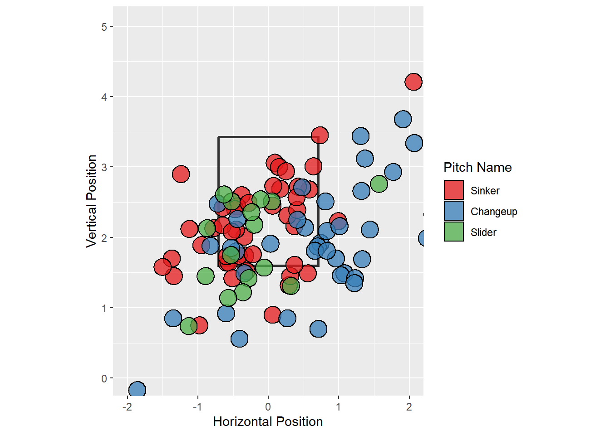
| pitch_name | n | percent |
|---|---|---|
| Sinker | 1417 | 45.9% |
| Changeup | 1161 | 37.6% |
| Slider | 506 | 16.4% |
| pitch_name | release_speed | ax | az | release_spin_rate | spin_axis_x | spin_axis_z |
|---|---|---|---|---|---|---|
| Sinker | 95.5 | 21.7122633 | -26.56065 | 2139.0 | 0.8571673 | -0.5150381 |
| Changeup | 86.3 | 16.4406044 | -32.53692 | 2052.0 | 0.9612617 | -0.2756374 |
| Slider | 85.8 | -0.2262266 | -31.57910 | 2091.5 | -0.7193398 | 0.3664873 |
Tarik Skubal

Tarik Daniel Skubal is an American professional MLB pitcher known for his dominant left-handed arsenal and elite strikeout ability. Born on November 20, 1996, in Haymarket, Virginia, he was drafted by the Detroit Tigers in the ninth round of the 2018 MLB Draft out of Seattle University. Skubal made his major league debut on August 18, 2020, and steadily developed into one of the most reliable starters in baseball. Breakout performances in subsequent seasons established him as the ace of the Tigers’ rotation, highlighted by his overpowering fastball, sharp slider, and improved command. Widely regarded as one of the top left-handed pitchers in MLB, Skubal continues to anchor Detroit’s pitching staff as a frontline starter.
| Season | Team | Age | W | L | SV | G | GS | IP | K/9 | BB/9 | HR/9 | BABIP | GB% | vFA | ERA | xERA | FIP | xFIP | WAR |
|---|---|---|---|---|---|---|---|---|---|---|---|---|---|---|---|---|---|---|---|
| 2020 | DET | 23 | 1 | 4 | 0 | 8 | 7 | 32.0 | 10.41 | 3.09 | 2.53 | 0.253 | 27.70% | 94.5 | 5.63 | 4.49 | 5.75 | 4.81 | -0.1 |
| 2021 | DET | 24 | 8 | 12 | 0 | 31 | 29 | 149.1 | 9.88 | 2.83 | 2.11 | 0.277 | 38.50% | 94.5 | 4.34 | 5.58 | 5.09 | 4.06 | 0.6 |
| 2022 | DET | 25 | 7 | 8 | 0 | 21 | 21 | 117.2 | 8.95 | 2.45 | 0.69 | 0.299 | 45.70% | 94.2 | 3.52 | 3.33 | 2.96 | 3.40 | 2.9 |
| 2023 | DET | 26 | 7 | 3 | 0 | 15 | 15 | 80.1 | 11.43 | 1.57 | 0.45 | 0.289 | 51.60% | 95.8 | 2.80 | 2.31 | 2.00 | 2.56 | 3.3 |
| 2024 | DET | 27 | 18 | 4 | 0 | 31 | 31 | 192.0 | 10.69 | 1.64 | 0.70 | 0.273 | 45.70% | 97.0 | 2.39 | 2.72 | 2.49 | 2.83 | 6.0 |
| 2025 | DET | 28 | 13 | 6 | 0 | 31 | 31 | 195.1 | 11.10 | 1.52 | 0.83 | 0.273 | 41.00% | 97.7 | 2.21 | 2.72 | 2.45 | 2.66 | 6.6 |
| Total | NA | NA | 54 | 37 | 0 | 137 | 134 | 766.2 | 10.44 | 2.02 | 1.06 | 0.279 | 42.80% | 95.8 | 3.08 | 3.32 | 3.14 | 3.17 | 19.3 |
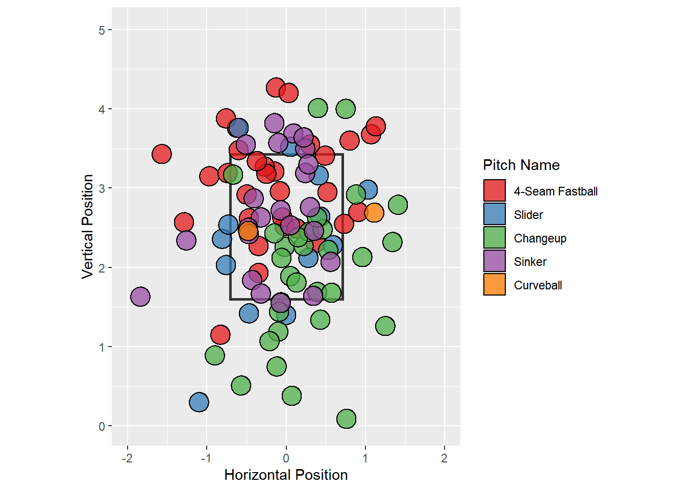
| pitch_name | n | percent |
|---|---|---|
| Changeup | 972 | 30.9% |
| 4-Seam Fastball | 952 | 30.2% |
| Sinker | 734 | 23.3% |
| Slider | 407 | 12.9% |
| Curveball | 84 | 2.7% |
| pitch_name | release_speed | ax | az | release_spin_rate | spin_axis_x | spin_axis_z |
|---|---|---|---|---|---|---|
| 4-Seam Fastball | 97.70 | 5.016089 | -11.62915 | 2363.5 | 0.4067366 | -0.9135455 |
| Sinker | 97.40 | 16.470155 | -15.79657 | 2247.0 | 0.4383711 | -0.8987940 |
| Slider | 90.10 | -2.337998 | -26.94075 | 2241.0 | 0.0174524 | -0.9743701 |
| Changeup | 88.00 | 15.033143 | -25.24774 | 1830.0 | 0.7071068 | -0.7071068 |
| Curveball | 81.15 | -3.245412 | -36.01989 | 2521.0 | -0.5735764 | 0.8191520 |
Paul Skenes

Paul David Skenes is an American professional MLB pitcher known for his overpowering fastball and dominant starting presence. Born on May 29, 2002, in Fullerton, California, he played college baseball at the Air Force Academy before transferring to LSU, where he led the Tigers to the 2023 College World Series title. Skenes was selected first overall by the Pittsburgh Pirates in the 2023 MLB Draft and made his major league debut in 2024. He quickly established himself as one of baseball’s premier young aces, combining elite velocity with a devastating mix of secondary pitches, and continues to anchor the Pirates’ rotation as a frontline starter.
| Season | Team | Age | W | L | SV | G | GS | IP | K/9 | BB/9 | HR/9 | BABIP | GB% | vFA | ERA | xERA | FIP | xFIP | WAR |
|---|---|---|---|---|---|---|---|---|---|---|---|---|---|---|---|---|---|---|---|
| 2024 | PIT | 22 | 11 | 3 | 0 | 23 | 23 | 133.0 | 11.50 | 2.17 | 0.68 | 0.284 | 51.30% | 98.9 | 1.96 | 2.52 | 2.44 | 2.54 | 4.3 |
| 2025 | PIT | 23 | 10 | 10 | 0 | 32 | 32 | 187.2 | 10.36 | 2.01 | 0.53 | 0.273 | 44.30% | 98.2 | 1.97 | 2.63 | 2.36 | 3.03 | 6.5 |
| Total | NA | NA | 21 | 13 | 0 | 55 | 55 | 320.2 | 10.83 | 2.08 | 0.59 | 0.277 | 47.10% | 98.5 | 1.96 | 2.58 | 2.40 | 2.83 | 10.8 |
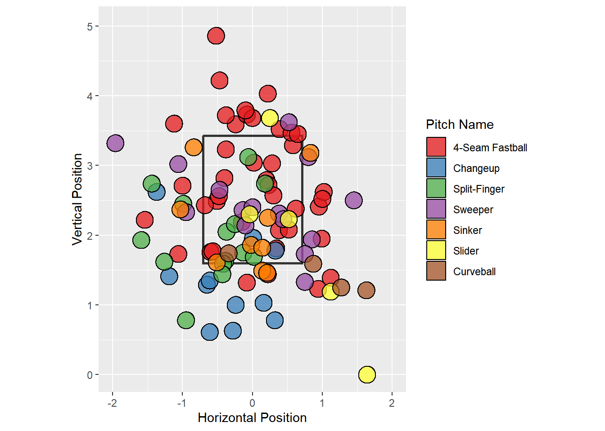
| pitch_name | n | percent |
|---|---|---|
| 4-Seam Fastball | 1196 | 39.9% |
| Sweeper | 476 | 15.9% |
| Split-Finger | 409 | 13.6% |
| Changeup | 326 | 10.9% |
| Sinker | 279 | 9.3% |
| Slider | 171 | 5.7% |
| Curveball | 140 | 4.7% |
| pitch_name | release_speed | ax | az | release_spin_rate | spin_axis_x | spin_axis_z |
|---|---|---|---|---|---|---|
| 4-Seam Fastball | 98.2 | -18.134856 | -18.10343 | 2266 | -0.8480481 | -0.5299193 |
| Sinker | 97.6 | -21.900695 | -24.19573 | 2272 | -0.8660254 | -0.5000000 |
| Split-Finger | 93.6 | -15.457214 | -32.08898 | 1683 | -0.9396926 | -0.3420201 |
| Changeup | 88.8 | -16.953735 | -26.28521 | 1801 | -0.9902681 | -0.1391731 |
| Slider | 85.2 | 2.216290 | -25.30748 | 2326 | 0.9816272 | -0.1564345 |
| Sweeper | 84.5 | 8.549715 | -26.92541 | 2337 | 0.9902681 | 0.0174524 |
| Curveball | 83.9 | 3.959596 | -34.13282 | 2446 | 0.9876883 | 0.1391731 |
Modeling
Decision Tree
Cristopher Sánchez
| .metric | mean | n | std_err |
|---|---|---|---|
| accuracy | 0.9991323 | 10 | 0.0005785 |
| brier_class | 0.0008671 | 10 | 0.0005777 |
| roc_auc | 0.9988917 | 10 | 0.0007549 |
| Sinker | Changeup | Slider | |
|---|---|---|---|
| Sinker | 355 | 0 | 0 |
| Changeup | 0 | 291 | 0 |
| Slider | 0 | 0 | 127 |
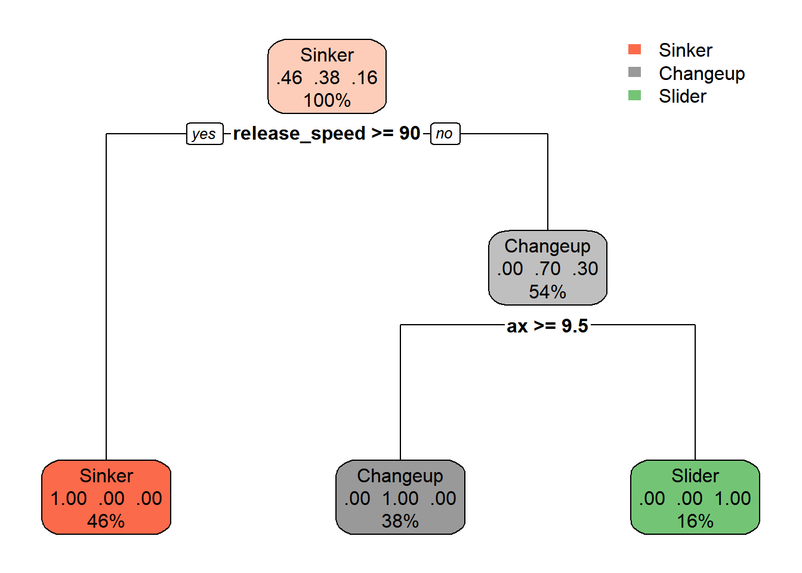
Tarik Skubal
| .metric | mean | n | std_err |
|---|---|---|---|
| accuracy | 0.9881153 | 10 | 0.0023483 |
| brier_class | 0.0117121 | 10 | 0.0022855 |
| roc_auc | 0.9959984 | 10 | 0.0007580 |
| 4-Seam Fastball | Slider | Changeup | Sinker | Curveball | |
|---|---|---|---|---|---|
| 4-Seam Fastball | 235 | 0 | 0 | 2 | 0 |
| Slider | 0 | 100 | 0 | 0 | 0 |
| Changeup | 1 | 3 | 237 | 1 | 0 |
| Sinker | 0 | 0 | 6 | 181 | 0 |
| Curveball | 0 | 0 | 0 | 0 | 24 |
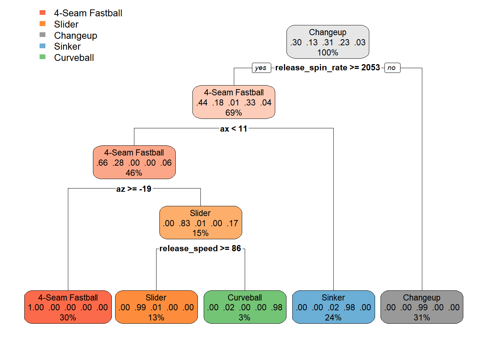
Paul Skenes
| .metric | mean | n | std_err |
|---|---|---|---|
| accuracy | 0.9532646 | 10 | 0.0032177 |
| brier_class | 0.0434634 | 10 | 0.0027117 |
| roc_auc | 0.9853129 | 10 | 0.0029258 |
| 4-Seam Fastball | Changeup | Split-Finger | Sweeper | Sinker | Slider | Curveball | |
|---|---|---|---|---|---|---|---|
| 4-Seam Fastball | 283 | 1 | 2 | 0 | 9 | 3 | 0 |
| Changeup | 0 | 78 | 2 | 0 | 0 | 1 | 0 |
| Split-Finger | 0 | 0 | 99 | 0 | 0 | 0 | 0 |
| Sweeper | 0 | 0 | 0 | 119 | 0 | 1 | 0 |
| Sinker | 14 | 0 | 0 | 0 | 59 | 0 | 0 |
| Slider | 0 | 0 | 0 | 5 | 0 | 43 | 1 |
| Curveball | 0 | 0 | 0 | 0 | 0 | 0 | 32 |
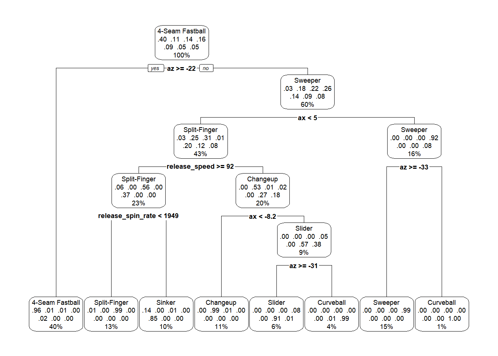
Random Forest
Cristopher Sánchez
| .metric | mean | n | std_err |
|---|---|---|---|
| accuracy | 0.9986994 | 10 | 0.0006622 |
| brier_class | 0.0019605 | 10 | 0.0006016 |
| roc_auc | 0.9998195 | 10 | 0.0000951 |
| Sinker | Changeup | Slider | |
|---|---|---|---|
| Sinker | 355 | 0 | 0 |
| Changeup | 0 | 291 | 0 |
| Slider | 0 | 0 | 127 |

Tarik Skubal
| .metric | mean | n | std_err |
|---|---|---|---|
| accuracy | 0.9970320 | 10 | 0.0009029 |
| brier_class | 0.0032959 | 10 | 0.0005495 |
| roc_auc | 0.9999649 | 10 | 0.0000312 |
| 4-Seam Fastball | Slider | Changeup | Sinker | Curveball | |
|---|---|---|---|---|---|
| 4-Seam Fastball | 236 | 0 | 0 | 1 | 0 |
| Slider | 0 | 103 | 0 | 0 | 0 |
| Changeup | 0 | 0 | 243 | 1 | 0 |
| Sinker | 0 | 0 | 0 | 182 | 0 |
| Curveball | 0 | 0 | 0 | 0 | 24 |
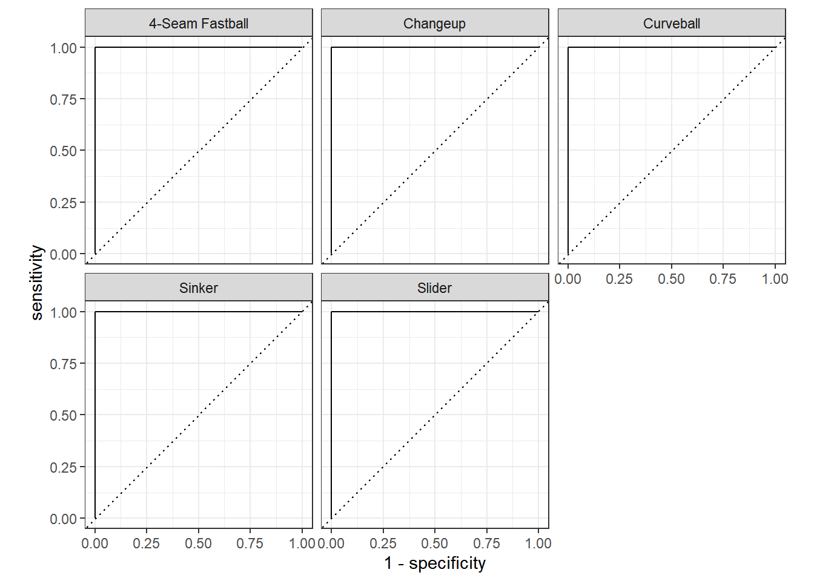
| pitch_name | .pred_class | .pred_4-Seam Fastball | .pred_Slider | .pred_Changeup | .pred_Sinker | .pred_Curveball |
|---|---|---|---|---|---|---|
| Sinker | 4-Seam Fastball | 0.5838567 | 0.0001111 | 0.0064008 | 0.4096313 | 0 |
| Sinker | Changeup | 0.0282139 | 0.0548813 | 0.5670706 | 0.3498341 | 0 |
Paul Skenes
| .metric | mean | n | std_err |
|---|---|---|---|
| accuracy | 0.9737274 | 10 | 0.0025142 |
| brier_class | 0.0222003 | 10 | 0.0016242 |
| roc_auc | 0.9991813 | 10 | 0.0001821 |
| 4-Seam Fastball | Changeup | Split-Finger | Sweeper | Sinker | Slider | Curveball | |
|---|---|---|---|---|---|---|---|
| 4-Seam Fastball | 293 | 0 | 0 | 0 | 10 | 0 | 0 |
| Changeup | 0 | 79 | 1 | 0 | 0 | 1 | 0 |
| Split-Finger | 0 | 0 | 102 | 0 | 0 | 0 | 0 |
| Sweeper | 0 | 0 | 0 | 119 | 0 | 1 | 0 |
| Sinker | 4 | 0 | 0 | 0 | 58 | 0 | 0 |
| Slider | 0 | 0 | 0 | 5 | 0 | 46 | 0 |
| Curveball | 0 | 0 | 0 | 0 | 0 | 0 | 33 |
| pitch_name | .pred_class | .pred_4-Seam Fastball | .pred_Changeup | .pred_Split-Finger | .pred_Sweeper | .pred_Sinker | .pred_Slider | .pred_Curveball |
|---|---|---|---|---|---|---|---|---|
| 4-Seam Fastball | Sinker | 0.2949647 | 0.0128817 | 0.0355619 | 0.0001111 | 0.6548583 | 0.0016222 | 0.0000000 |
| 4-Seam Fastball | Sinker | 0.2719865 | 0.0004000 | 0.0084702 | 0.0000000 | 0.7191433 | 0.0000000 | 0.0000000 |
| 4-Seam Fastball | Sinker | 0.4354344 | 0.0004444 | 0.0010679 | 0.0001250 | 0.5618854 | 0.0010429 | 0.0000000 |
| 4-Seam Fastball | Sinker | 0.4609619 | 0.0003333 | 0.0002000 | 0.0000000 | 0.5383619 | 0.0001429 | 0.0000000 |
| Split-Finger | Changeup | 0.0000000 | 0.8005146 | 0.1994854 | 0.0000000 | 0.0000000 | 0.0000000 | 0.0000000 |
| Sweeper | Slider | 0.0000000 | 0.0000000 | 0.0000000 | 0.2970877 | 0.0000000 | 0.6808163 | 0.0220960 |
| Sweeper | Slider | 0.0000000 | 0.0000000 | 0.0000000 | 0.3607440 | 0.0000000 | 0.5064730 | 0.1327829 |
| Sweeper | Slider | 0.0020000 | 0.0004722 | 0.0051357 | 0.3128290 | 0.0061615 | 0.6314115 | 0.0419901 |
| Sweeper | Slider | 0.0001000 | 0.0028770 | 0.0010179 | 0.2015008 | 0.0001000 | 0.6961484 | 0.0982560 |
| Sweeper | Slider | 0.0000000 | 0.0000000 | 0.0000000 | 0.3012762 | 0.0000000 | 0.6791595 | 0.0195643 |
| Sinker | 4-Seam Fastball | 0.9182829 | 0.0000000 | 0.0000000 | 0.0000000 | 0.0817171 | 0.0000000 | 0.0000000 |
| Sinker | 4-Seam Fastball | 0.7602188 | 0.0003333 | 0.0018206 | 0.0000000 | 0.2373273 | 0.0003000 | 0.0000000 |
| Sinker | 4-Seam Fastball | 0.8321465 | 0.0000000 | 0.0000000 | 0.0001250 | 0.1672285 | 0.0005000 | 0.0000000 |
| Sinker | 4-Seam Fastball | 0.5525214 | 0.0000000 | 0.0000000 | 0.0000000 | 0.4474786 | 0.0000000 | 0.0000000 |
| Sinker | 4-Seam Fastball | 0.8848373 | 0.0000000 | 0.0000000 | 0.0000000 | 0.1151627 | 0.0000000 | 0.0000000 |
| Sinker | 4-Seam Fastball | 0.5948607 | 0.0000000 | 0.0000000 | 0.0000000 | 0.4051393 | 0.0000000 | 0.0000000 |
| Sinker | 4-Seam Fastball | 0.6811115 | 0.0003333 | 0.0004222 | 0.0000000 | 0.3181329 | 0.0000000 | 0.0000000 |
| Sinker | 4-Seam Fastball | 0.7802294 | 0.0000000 | 0.0000000 | 0.0000000 | 0.2197706 | 0.0000000 | 0.0000000 |
| Sinker | 4-Seam Fastball | 0.6048060 | 0.0000000 | 0.0000000 | 0.0000000 | 0.3951940 | 0.0000000 | 0.0000000 |
| Sinker | 4-Seam Fastball | 0.6323952 | 0.0000000 | 0.0000000 | 0.0000000 | 0.3676048 | 0.0000000 | 0.0000000 |
| Slider | Changeup | 0.0001000 | 0.9105413 | 0.0616317 | 0.0108075 | 0.0000000 | 0.0161944 | 0.0007250 |
| Slider | Sweeper | 0.0000000 | 0.0000000 | 0.0000000 | 0.7545373 | 0.0000000 | 0.1631873 | 0.0822754 |
K-Nearest Neighbors (KNN)
Cristopher Sánchez
| .metric | mean | n | std_err |
|---|---|---|---|
| accuracy | 0.9985570 | 9 | 0.0007215 |
| brier_class | 0.0013091 | 9 | 0.0006366 |
| roc_auc | 0.9985183 | 9 | 0.0009802 |
| Sinker | Changeup | Slider | |
|---|---|---|---|
| Sinker | 355 | 0 | 0 |
| Changeup | 0 | 291 | 0 |
| Slider | 0 | 0 | 127 |
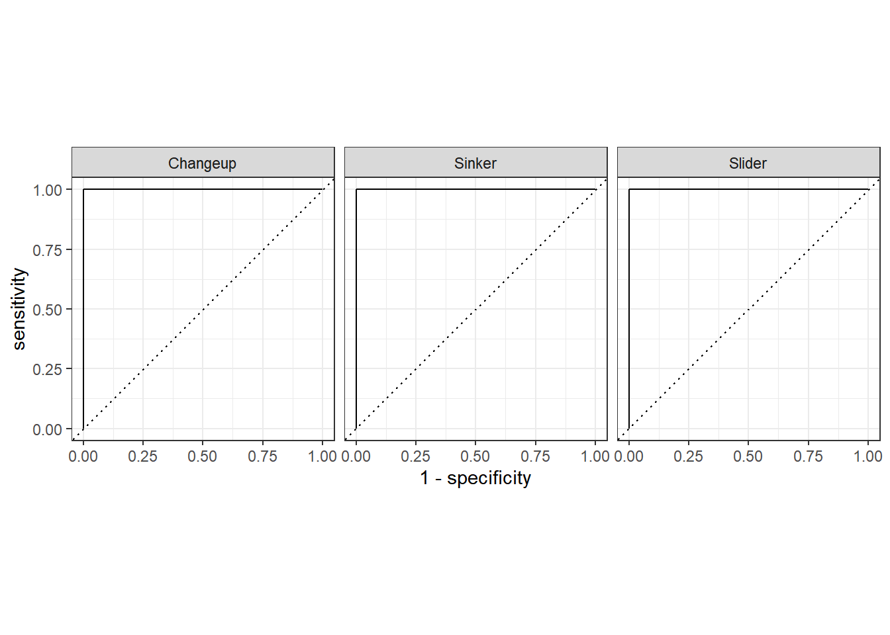
Tarik Skubal
| .metric | mean | n | std_err |
|---|---|---|---|
| accuracy | 0.9961862 | 10 | 0.0014725 |
| brier_class | 0.0033155 | 10 | 0.0010260 |
| roc_auc | 0.9995922 | 10 | 0.0002725 |
| 4-Seam Fastball | Slider | Changeup | Sinker | Curveball | |
|---|---|---|---|---|---|
| 4-Seam Fastball | 236 | 0 | 0 | 0 | 0 |
| Slider | 0 | 103 | 0 | 0 | 0 |
| Changeup | 0 | 0 | 243 | 0 | 0 |
| Sinker | 0 | 0 | 0 | 184 | 0 |
| Curveball | 0 | 0 | 0 | 0 | 24 |

| pitch_name | .pred_class | .pred_4-Seam Fastball | .pred_Slider | .pred_Changeup | .pred_Sinker | .pred_Curveball |
|---|---|---|---|---|---|---|
| NA | NA | NA | NA | NA | NA | NA |
| :---------- | :----------- | ---------------------: | ------------: | --------------: | ------------: | ---------------: |
Paul Skenes
| .metric | mean | n | std_err |
|---|---|---|---|
| accuracy | 0.9576813 | 10 | 0.0033312 |
| brier_class | 0.0320728 | 10 | 0.0018269 |
| roc_auc | 0.9945525 | 10 | 0.0007173 |
| 4-Seam Fastball | Changeup | Split-Finger | Sweeper | Sinker | Slider | Curveball | |
|---|---|---|---|---|---|---|---|
| 4-Seam Fastball | 293 | 0 | 0 | 0 | 7 | 0 | 0 |
| Changeup | 0 | 78 | 1 | 0 | 0 | 1 | 0 |
| Split-Finger | 0 | 0 | 102 | 0 | 0 | 0 | 0 |
| Sweeper | 0 | 0 | 0 | 121 | 0 | 13 | 0 |
| Sinker | 4 | 1 | 0 | 0 | 61 | 0 | 0 |
| Slider | 0 | 0 | 0 | 3 | 0 | 33 | 0 |
| Curveball | 0 | 0 | 0 | 0 | 0 | 1 | 33 |
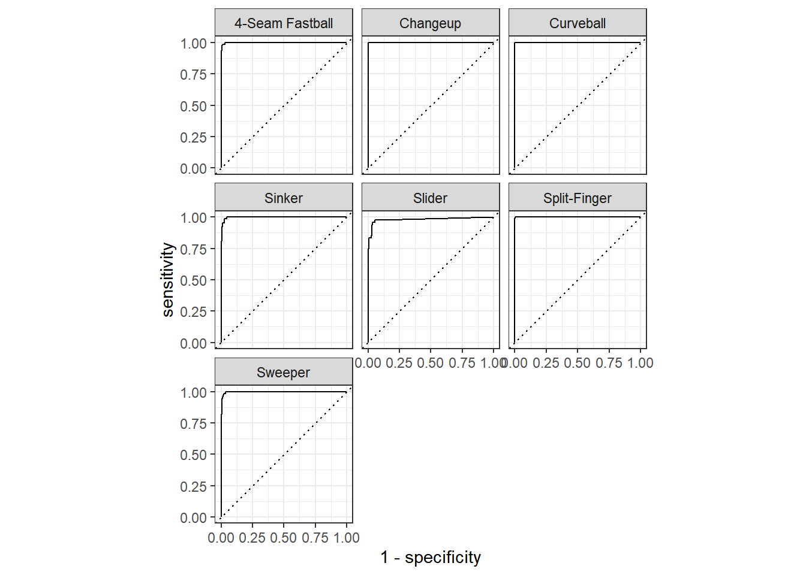
# A tibble: 31 × 9
pitch_name .pred_class `.pred_4-Seam Fastball` .pred_Changeup
<fct> <fct> <dbl> <dbl>
1 4-Seam Fastball Sinker 0.438 0
2 4-Seam Fastball Sinker 0.329 0
3 4-Seam Fastball Sinker 0.377 0
4 4-Seam Fastball Sinker 0.398 0
5 Changeup Sinker 0 0.320
6 Split-Finger Changeup 0 0.670
7 Sweeper Slider 0 0
8 Sweeper Slider 0 0
9 Sweeper Slider 0 0
10 Sinker 4-Seam Fastball 0.829 0
11 Sinker 4-Seam Fastball 0.552 0
12 Sinker 4-Seam Fastball 0.921 0
13 Sinker 4-Seam Fastball 0.575 0
14 Sinker 4-Seam Fastball 0.603 0
15 Sinker 4-Seam Fastball 0.771 0
16 Sinker 4-Seam Fastball 0.588 0
17 Slider Changeup 0 1
18 Slider Sweeper 0 0
19 Slider Sweeper 0 0
20 Slider Sweeper 0 0
21 Slider Sweeper 0 0
22 Slider Sweeper 0 0
23 Slider Sweeper 0 0
24 Slider Sweeper 0 0
25 Slider Sweeper 0 0
26 Slider Sweeper 0 0
27 Slider Sweeper 0 0
28 Slider Sweeper 0 0
29 Slider Sweeper 0 0
30 Slider Sweeper 0 0
31 Slider Curveball 0 0
# ℹ 5 more variables: `.pred_Split-Finger` <dbl>, .pred_Sweeper <dbl>,
# .pred_Sinker <dbl>, .pred_Slider <dbl>, .pred_Curveball <dbl>| pitch_name | .pred_class | .pred_4-Seam Fastball | .pred_Changeup | .pred_Split-Finger | .pred_Sweeper | .pred_Sinker | .pred_Slider | .pred_Curveball |
|---|---|---|---|---|---|---|---|---|
| 4-Seam Fastball | Sinker | 0.4384905 | 0.0000000 | 0.0000000 | 0.0000000 | 0.5615095 | 0.0000000 | 0.0000000 |
| 4-Seam Fastball | Sinker | 0.3288938 | 0.0000000 | 0.0000000 | 0.0000000 | 0.6711062 | 0.0000000 | 0.0000000 |
| 4-Seam Fastball | Sinker | 0.3766104 | 0.0000000 | 0.0000000 | 0.0000000 | 0.6233896 | 0.0000000 | 0.0000000 |
| 4-Seam Fastball | Sinker | 0.3977709 | 0.0000000 | 0.0000000 | 0.0000000 | 0.6022291 | 0.0000000 | 0.0000000 |
| Changeup | Sinker | 0.0000000 | 0.3202953 | 0.0000000 | 0.0013038 | 0.5246015 | 0.0000000 | 0.1537995 |
| Split-Finger | Changeup | 0.0000000 | 0.6696681 | 0.3303319 | 0.0000000 | 0.0000000 | 0.0000000 | 0.0000000 |
| Sweeper | Slider | 0.0000000 | 0.0000000 | 0.0000000 | 0.4956500 | 0.0000000 | 0.5043500 | 0.0000000 |
| Sweeper | Slider | 0.0000000 | 0.0000000 | 0.0000000 | 0.3871166 | 0.0000000 | 0.6128834 | 0.0000000 |
| Sweeper | Slider | 0.0000000 | 0.0000000 | 0.0000000 | 0.3364556 | 0.0000000 | 0.6635444 | 0.0000000 |
| Sinker | 4-Seam Fastball | 0.8286520 | 0.0000000 | 0.0000000 | 0.0000000 | 0.1713480 | 0.0000000 | 0.0000000 |
| Sinker | 4-Seam Fastball | 0.5520612 | 0.0000000 | 0.0000000 | 0.0000000 | 0.4479388 | 0.0000000 | 0.0000000 |
| Sinker | 4-Seam Fastball | 0.9208919 | 0.0000000 | 0.0000000 | 0.0000000 | 0.0791081 | 0.0000000 | 0.0000000 |
| Sinker | 4-Seam Fastball | 0.5751769 | 0.0000000 | 0.0000000 | 0.0000000 | 0.4248231 | 0.0000000 | 0.0000000 |
| Sinker | 4-Seam Fastball | 0.6030378 | 0.0000000 | 0.0000000 | 0.0000000 | 0.3969622 | 0.0000000 | 0.0000000 |
| Sinker | 4-Seam Fastball | 0.7710947 | 0.0000000 | 0.0000000 | 0.0000000 | 0.2289053 | 0.0000000 | 0.0000000 |
| Sinker | 4-Seam Fastball | 0.5876524 | 0.0000000 | 0.0000000 | 0.0000000 | 0.4123476 | 0.0000000 | 0.0000000 |
| Slider | Changeup | 0.0000000 | 1.0000000 | 0.0000000 | 0.0000000 | 0.0000000 | 0.0000000 | 0.0000000 |
| Slider | Sweeper | 0.0000000 | 0.0000000 | 0.0000000 | 0.8270676 | 0.0000000 | 0.1729324 | 0.0000000 |
| Slider | Sweeper | 0.0000000 | 0.0000000 | 0.0000000 | 0.5777708 | 0.0000000 | 0.4222292 | 0.0000000 |
| Slider | Sweeper | 0.0000000 | 0.0000000 | 0.0000000 | 0.5097145 | 0.0000000 | 0.4902855 | 0.0000000 |
| Slider | Sweeper | 0.0000000 | 0.0000000 | 0.0000000 | 0.5154264 | 0.0000000 | 0.4845736 | 0.0000000 |
| Slider | Sweeper | 0.0000000 | 0.0000000 | 0.0000000 | 0.7891654 | 0.0000000 | 0.2108346 | 0.0000000 |
| Slider | Sweeper | 0.0000000 | 0.0000000 | 0.0000000 | 0.5890617 | 0.0000000 | 0.4109383 | 0.0000000 |
| Slider | Sweeper | 0.0000000 | 0.0000000 | 0.0000000 | 0.6021233 | 0.0000000 | 0.3978767 | 0.0000000 |
| Slider | Sweeper | 0.0000000 | 0.0000000 | 0.0000000 | 0.7801751 | 0.0000000 | 0.2198249 | 0.0000000 |
| Slider | Sweeper | 0.0000000 | 0.0000000 | 0.0000000 | 0.5228901 | 0.0000000 | 0.4771099 | 0.0000000 |
| Slider | Sweeper | 0.0000000 | 0.0000000 | 0.0000000 | 0.6238012 | 0.0000000 | 0.3761988 | 0.0000000 |
| Slider | Sweeper | 0.0000000 | 0.0000000 | 0.0000000 | 0.7814578 | 0.0000000 | 0.2185422 | 0.0000000 |
| Slider | Sweeper | 0.0000000 | 0.0000000 | 0.0000000 | 0.6656097 | 0.0000000 | 0.2233761 | 0.1110142 |
| Slider | Sweeper | 0.0000000 | 0.0000000 | 0.0000000 | 0.9160665 | 0.0000000 | 0.0839335 | 0.0000000 |
| Slider | Curveball | 0.0000000 | 0.0000000 | 0.0000000 | 0.3095876 | 0.0000000 | 0.2276118 | 0.4628006 |
Comparison
Cristopher Sánchez
| wflow_id | .config | preproc | model | .metric | .estimator | mean | n | std_err |
|---|---|---|---|---|---|---|---|---|
| recipe_1_decision_tree | pre0_mod0_post0 | recipe | decision_tree | accuracy | multiclass | 0.9991323 | 10 | 0.0005785 |
| recipe_1_decision_tree | pre0_mod0_post0 | recipe | decision_tree | brier_class | multiclass | 0.0008671 | 10 | 0.0005777 |
| recipe_1_decision_tree | pre0_mod0_post0 | recipe | decision_tree | roc_auc | hand_till | 0.9988917 | 10 | 0.0007549 |
| recipe_2_rand_forest | pre0_mod0_post0 | recipe | rand_forest | accuracy | multiclass | 0.9986994 | 10 | 0.0006622 |
| recipe_2_rand_forest | pre0_mod0_post0 | recipe | rand_forest | brier_class | multiclass | 0.0019631 | 10 | 0.0006022 |
| recipe_2_rand_forest | pre0_mod0_post0 | recipe | rand_forest | roc_auc | hand_till | 0.9998235 | 10 | 0.0000954 |
| recipe_3_nearest_neighbor | pre0_mod0_post0 | recipe | nearest_neighbor | accuracy | multiclass | 0.9985570 | 9 | 0.0007215 |
| recipe_3_nearest_neighbor | pre0_mod0_post0 | recipe | nearest_neighbor | brier_class | multiclass | 0.0013091 | 9 | 0.0006366 |
| recipe_3_nearest_neighbor | pre0_mod0_post0 | recipe | nearest_neighbor | roc_auc | hand_till | 0.9985183 | 9 | 0.0009802 |
Tarik Skubal
| wflow_id | .config | preproc | model | .metric | .estimator | mean | n | std_err |
|---|---|---|---|---|---|---|---|---|
| recipe_1_decision_tree | pre0_mod0_post0 | recipe | decision_tree | accuracy | multiclass | 0.9881153 | 10 | 0.0023483 |
| recipe_1_decision_tree | pre0_mod0_post0 | recipe | decision_tree | brier_class | multiclass | 0.0117121 | 10 | 0.0022855 |
| recipe_1_decision_tree | pre0_mod0_post0 | recipe | decision_tree | roc_auc | hand_till | 0.9959984 | 10 | 0.0007580 |
| recipe_2_rand_forest | pre0_mod0_post0 | recipe | rand_forest | accuracy | multiclass | 0.9974522 | 10 | 0.0009362 |
| recipe_2_rand_forest | pre0_mod0_post0 | recipe | rand_forest | brier_class | multiclass | 0.0031814 | 10 | 0.0005304 |
| recipe_2_rand_forest | pre0_mod0_post0 | recipe | rand_forest | roc_auc | hand_till | 0.9999649 | 10 | 0.0000312 |
| recipe_3_nearest_neighbor | pre0_mod0_post0 | recipe | nearest_neighbor | accuracy | multiclass | 0.9961862 | 10 | 0.0014725 |
| recipe_3_nearest_neighbor | pre0_mod0_post0 | recipe | nearest_neighbor | brier_class | multiclass | 0.0033155 | 10 | 0.0010260 |
| recipe_3_nearest_neighbor | pre0_mod0_post0 | recipe | nearest_neighbor | roc_auc | hand_till | 0.9995922 | 10 | 0.0002725 |
Paul Skenes
| wflow_id | .config | preproc | model | .metric | .estimator | mean | n | std_err |
|---|---|---|---|---|---|---|---|---|
| recipe_1_decision_tree | pre0_mod0_post0 | recipe | decision_tree | accuracy | multiclass | 0.9532646 | 10 | 0.0032177 |
| recipe_1_decision_tree | pre0_mod0_post0 | recipe | decision_tree | brier_class | multiclass | 0.0434634 | 10 | 0.0027117 |
| recipe_1_decision_tree | pre0_mod0_post0 | recipe | decision_tree | roc_auc | hand_till | 0.9853129 | 10 | 0.0029258 |
| recipe_2_rand_forest | pre0_mod0_post0 | recipe | rand_forest | accuracy | multiclass | 0.9728386 | 10 | 0.0023310 |
| recipe_2_rand_forest | pre0_mod0_post0 | recipe | rand_forest | brier_class | multiclass | 0.0221492 | 10 | 0.0016532 |
| recipe_2_rand_forest | pre0_mod0_post0 | recipe | rand_forest | roc_auc | hand_till | 0.9991710 | 10 | 0.0002267 |
| recipe_3_nearest_neighbor | pre0_mod0_post0 | recipe | nearest_neighbor | accuracy | multiclass | 0.9576813 | 10 | 0.0033312 |
| recipe_3_nearest_neighbor | pre0_mod0_post0 | recipe | nearest_neighbor | brier_class | multiclass | 0.0320728 | 10 | 0.0018269 |
| recipe_3_nearest_neighbor | pre0_mod0_post0 | recipe | nearest_neighbor | roc_auc | hand_till | 0.9945525 | 10 | 0.0007173 |